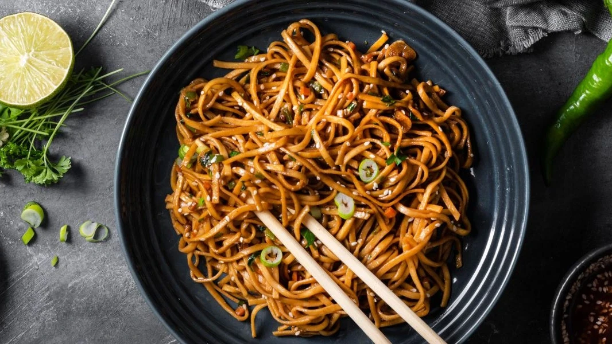

Keema Noodles

Ingredients
- 200g Minced Chicken or Mutton (Keema)
- 200g Noodles
- 1 Onion (finely chopped)
- 1 Tomato (chopped)
- 1 tbsp Ginger-Garlic Paste
- 1/2 cup Mixed Vegetables (carrot, capsicum, beans)
- 1 tsp Soy Sauce
- 1 tsp Chili Sauce
- Salt to taste
- 2 tbsp Oil
Steps
- Boil noodles according to package instructions and drain.
- Heat oil in a pan and sauté onion until golden.
- Add ginger-garlic paste and cook for 1 minute.
- Add minced meat (keema) and cook until fully done.
- Add chopped tomato and cook until soft.
- Add mixed vegetables and cook for 2–3 minutes.
- Add soy sauce, chili sauce, and salt.
- Add boiled noodles and mix well.
- Cook for 2–3 minutes and serve hot.
⏱️ Time: 25 Minutes | 🔥 Difficulty: Medium
⬅ Back